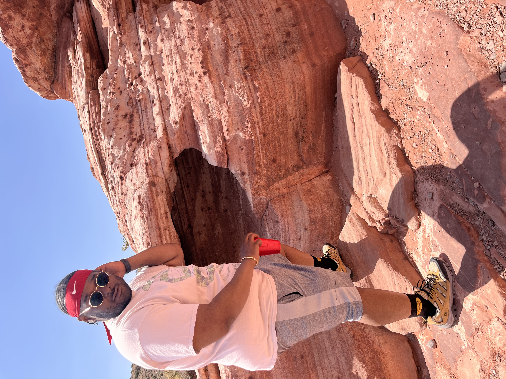

See the difference discipline makes. Before vs After

Before: Life Unfocused

After: 226 Method Discipline
You've explored the methods, the meals, the nights out, and all the ways to stay consistent. The 226 Method isn't about perfection - it's about progress, discipline, and enjoying the journey. Every workout, every meal choice, and every moment spent with loved ones builds the life you want.
Remember: consistency beats intensity, moderation beats restriction, and mindset beats temptation. The results you see tomorrow come from the choices you make today.
Your story is still being written. Stick with the 226 Method, and by the end, it will be your time to shine, share your journey, and inspire others.
© 2026 The 226 Method | TrainWithTonio